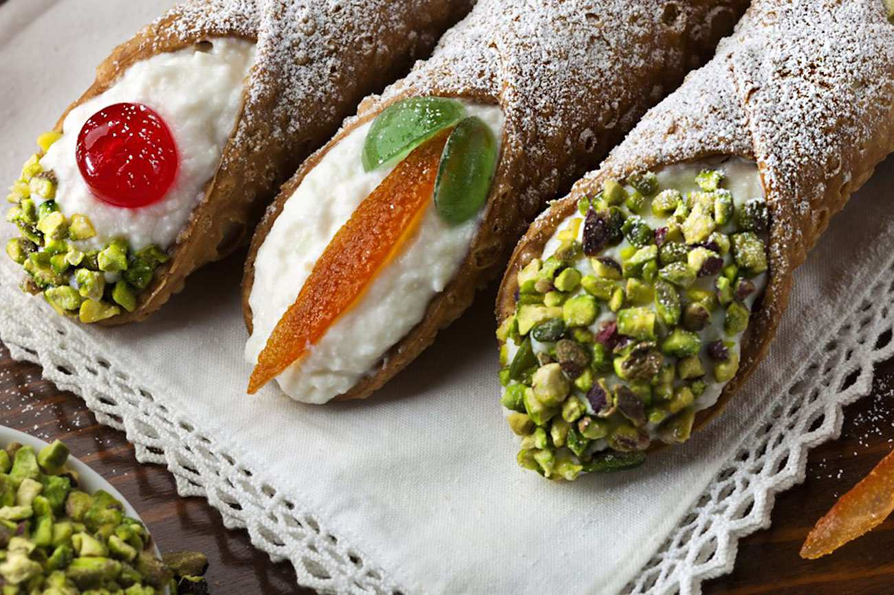
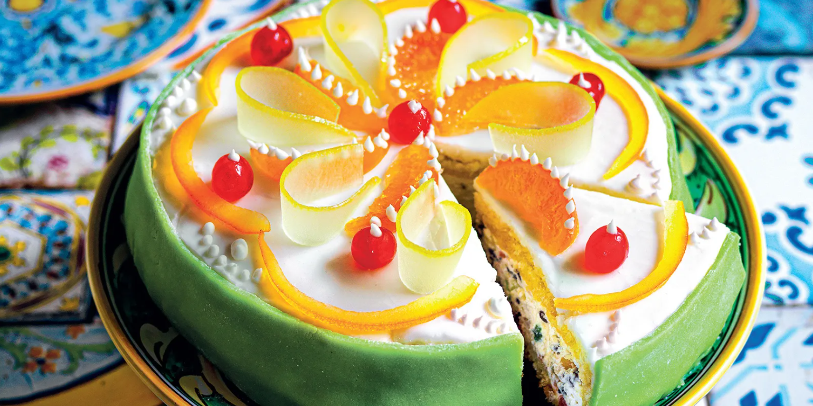
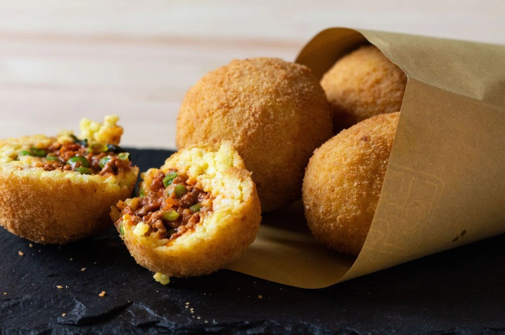
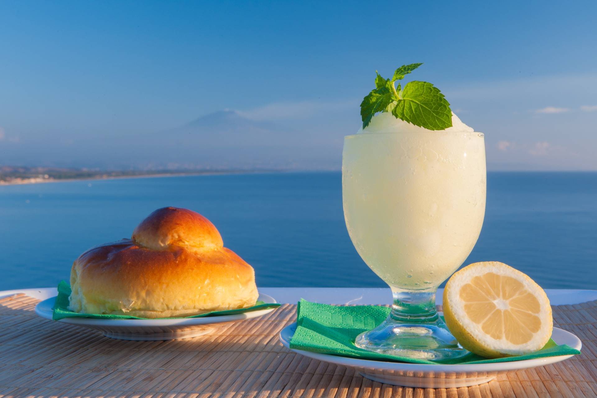
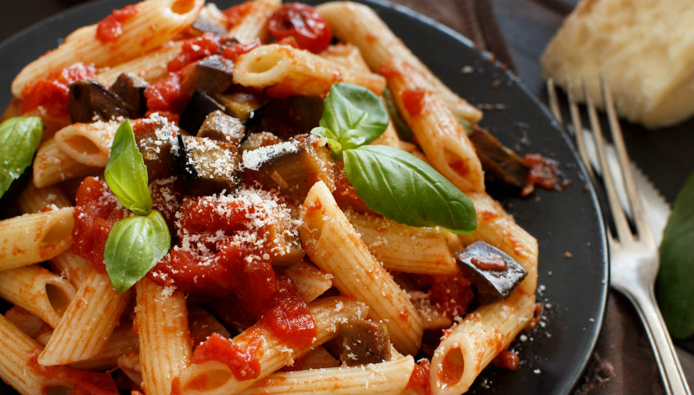
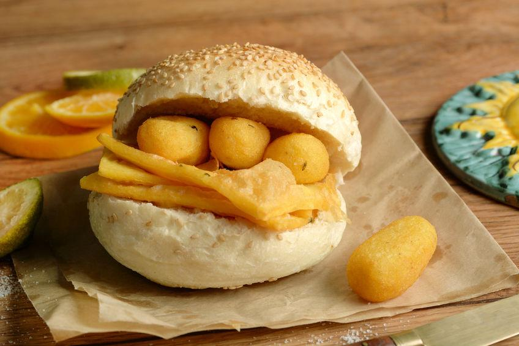
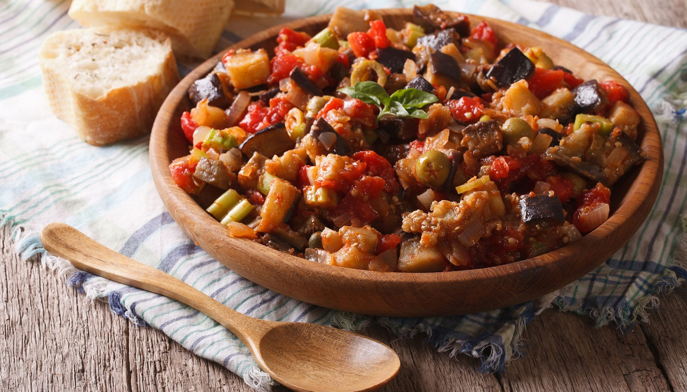
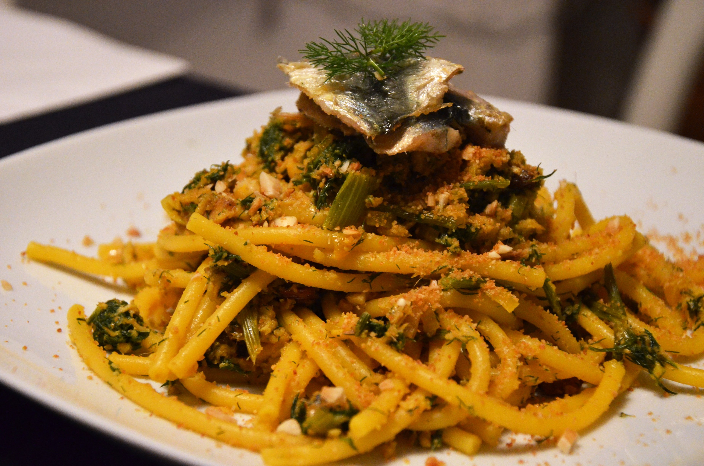
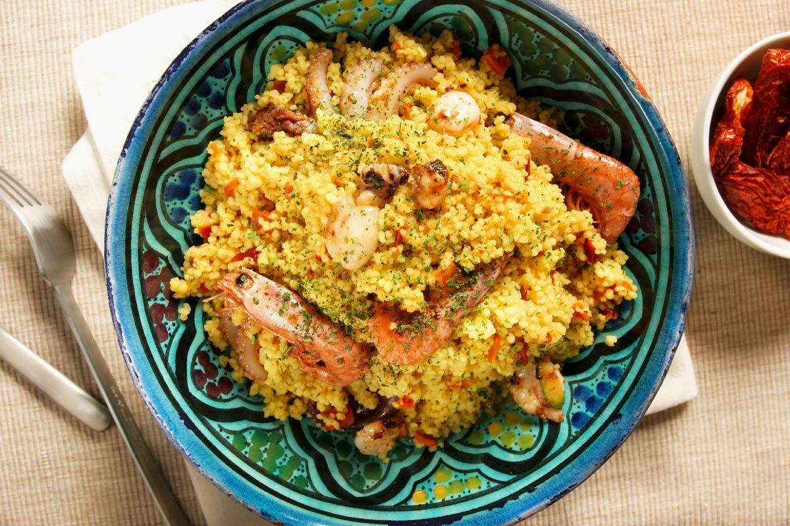
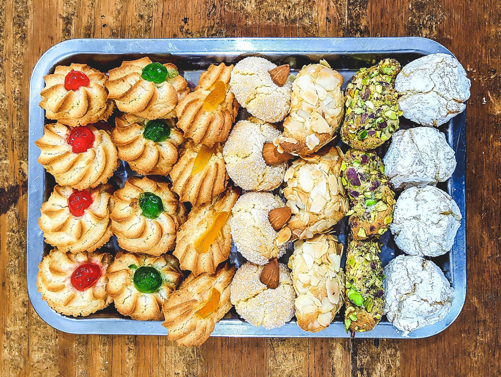

1.
CANNOLO
VOTO: 10
Considerato il re della pasticceria siciliana, il cannolo vanta molti secoli di storia e consiste in una cialda di pasta fritta arrotolata e ripiena di ricotta fresca. A seconda della zona in cui ci si trova la farcitura esterna può essere arricchita da scorza di arancia candita, granella di pistacchio, gocce di cioccolato; oppure il ripieno può contenere crema di cioccolato anziché la ricotta. Il cannolo inizialmente veniva preparato in occasione del carnevale, ma la sua ineguagliabile bontà ha permesso una diffusione più ampia, diventando così un rinomato esempio dell'arte pasticcera siciliana ed italiana nel mondo.
Fra le curiosità segnaliamo che è il dolce più gettonato a Taormina.
2.
CASSATA
VOTO: 8.5
Se il cannolo è il Re della pasticceria siciliana la cassata è sicuramente la regina. L'antica ricetta consiste in una torta a base di ricotta fresca di pecora, pan di Spagna, pasta di mandorle (detta anche pasta reale), glassa di zucchero e decorazioni di frutta candita; quest'ultime donano una vista regale e fanno di questo dolce di origini palermitane un vero trionfo per la gola.
Per questo dolce tipico siciliano non mancano le varianti locali ed esiste anche la versione monoporzione: la cassatina.
3.
ARANCINO
VOTO: 10
Un altro simbolo della gastronomia sicula è l'arancino, comunemente chiamato arancina se ci troviamo nella parte occidentale dell'isola. Tipica espressione della rosticceria siciliana l'arancino è un cono o una sfera di riso farcito, impanato e fritto. I gusti classici sono al ragù di carne ed al burro, ma esistono numerosi varianti come "alla Norma" e persino al cioccolato e al pistacchio.
Le sue origini sono molto discusse e le varie città dell'isola si contendono la paternità; tuttavia l'arancino, ovunque in Sicilia, è una irrinunciabile prelibatezza da gustare a qualsiasi ora della giornata.
4.
GRANITA
VOTO: 9.5
La granita è la tipica colazione dei siciliani sin da tempi remoti, soprattutto nei mesi caldi delle zone costiere. Utilizzata anche come spuntino pomeridiano la granita siciliana consiste in un liquido semi-congelato granuloso a base di acqua, zucchero ed estratto dell'ingrediente principale (limone, pistacchio, caffè, ecc...). Viene degustata quasi sempre insieme alla classica brioscia con tuppo, preparata con pasta lievitata all'uovo.
I gusti più gettonati della granita siciliana sono: limone, caffè con panna, pistacchio, fragola, mandorla, cioccolato, pesca, gelsomino e gelso nero.
5.
PASTA ALLA NORMA
VOTO: 10
Fra le più gustose specialità siciliane non potevano mancare i primi piatti, tra cui la popolare pasta alla Norma che è caratterizzata da sapori tipicamente mediterranei: preparata con maccheroni o vari tipi di pasta corta è condita con pomodoro, melanzane fritte, ricotta salata e basilico.
Originaria di Catania la pasta ca' Norma deve il suo nome al commediografo Nino Martoglio che, per la sua bontà, la paragonò alla celebre opera teatrale di Vincenzo Bellini.
6.
PANELLE E CROCCHE'
VOTO: 9
È d'obbligo menzionare il cibo da strada della cucina palermitana, lo street food ai primi posti della speciale classifica mondiale stilata da Forbes, il cui simbolo è rappresentato dalle panelle accompagnate con il pane. Le panelle sono preparate con farina di ceci, acqua, prezzemolo e sale; la pastella ottenuta viene poi tagliata e fritta.
'U pani chi Panelli è un delizioso spuntino spesso abbinato alle crocchè (dette anche cazzilli), le quali consistono in crocchette di patate, pepe e prezzemolo.
7.
CAPONATA
VOTO: 9
Con le sue decine di varianti la caponata siciliana è una pietanza intrisa di sapori mediterranei dal gusto agrodolce, utilizzata sia come contorno che come piatto unico accompagnato dal pane. Gli ingredienti comuni alle principali ricette, che cambiano in base alle usanze locali dell'isola, sono: melanzane fritte, pomodoro, capperi, olive, sedano, cipolla, sale, aceto e zucchero.
La caponata rappresenta il tipico "piatto povero" dal gusto ricco e saporito, che si consuma soprattutto nei mesi estivi quando la melanzana arriva alla sua perfetta maturazione.
8.
PASTA CON LE SARDE
VOTO: 7
Un altro importante primo piatto siciliano è la pasta con le sarde, di origini palermitane e con numerose varianti. La più classica delle ricette prevede l'accostamento di pasta lunga (bucatini o maccheroni) con sarde fresche, finocchietto selvatico, uva passa, pinoli, cipolla, zafferano, olio, sale e pepe.
Dalle note agrodolci, la pasta con le sarde è un sapiente mix di sapori di terra con inebrianti profumi di mare.
9.
COUS COUS
VOTO: 8
Un alimento tipico della Sicilia occidentale e del Nord Africa è il cous cous, cucinato soprattutto nel trapanese dove nel dialetto locale viene chiamato cùscusu. Si prepara "incocciando" la semola di grano duro, che viene poi cotta a vapore in una particolare pentola forata di terracotta smaltata, ed accostata a vari condimenti ottenendo così il cous cous di pesce oppure il cous cous di verdure.
Per le sue radici multiculturali viene celebrato anche come Piatto della Pace.
10.
PASTA DI MANDORLE
VOTO: 7.5
Detta anche Pasta Reale perché ritenuta "degna di un re" per la sua bontà, la pasta di mandorle è un altro prodotto tipico della pasticceria isolana. È utilizzata per la preparazione di vari dolci quali: biscotti e pasticcini con mandorle o frutta candita, la frutta martorana (che si regala in occasione della festa di Ognissanti), la cassata e le cassatelle.
Derivata dal seme del mandorlo, molto usato nella cucina siciliana, la pasta di mandorle è elaborata anche in altre regioni ma è ufficialmente riconoscita come prodotto agroalimentare tradizionale siciliano.
